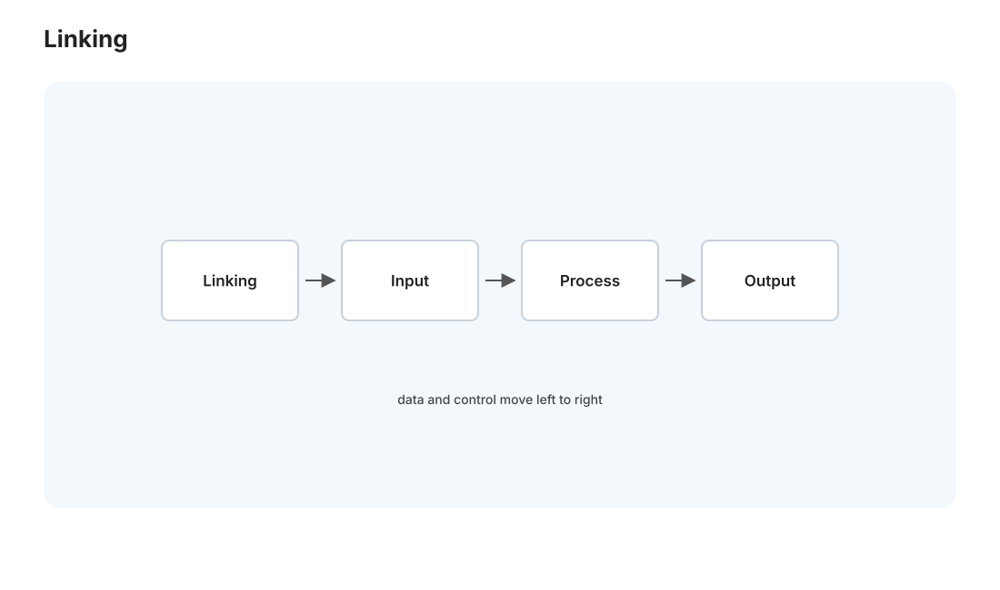
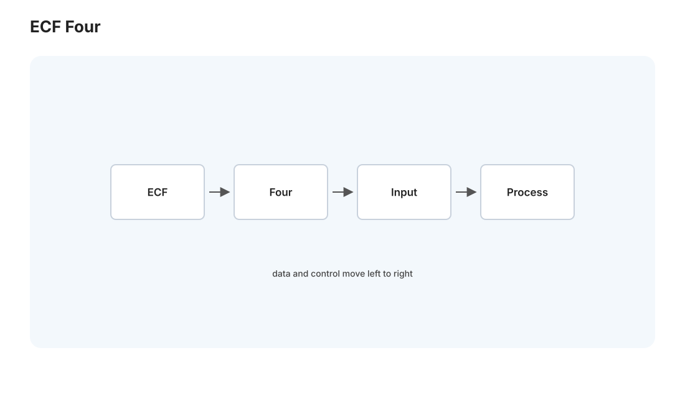
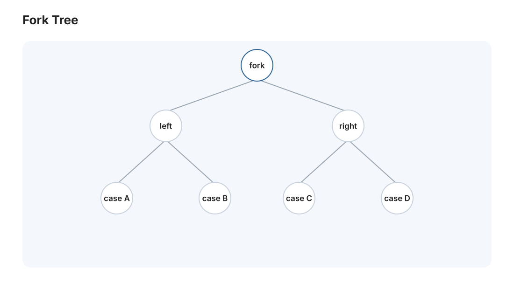

CSAPP III · 链接与异常控制流
对标：CS:APP 第 7–8 章 ｜ 前置：csapp-01/02 两个常被跳过、却是"程序如何真正运行起来"的关键机制：链接（多个源文件、库怎么拼成一个可执行文件，为什么会有那些诡异的 "undefined reference" 和 "multiple definition"）与异常控制流（程序的执行怎么被硬件中断、系统调用、信号打断和切换——一切并发与操作系统的物理起点）。
1. 链接：符号的解析与重定位

你的程序由多个 .c 编译成多个 .o，还要连上 libc——链接器负责把它们拼成一个可执行文件，干两件事：
- 符号解析：每个
.o有一张符号表（定义了哪些函数/全局变量、引用了哪些外部符号）。链接器把每个引用绑定到唯一的定义。找不到定义 →undefined reference（漏了库或拼错名）；找到多个 →multiple definition（头文件里定义了变量而非声明）。这两个最常见的链接错误，根源都在符号解析这一步。 - 重定位：各
.o都以为自己从地址 0 开始；链接器把它们排进统一地址空间、修正所有地址引用。
强弱符号规则（C 的隐藏坑）：函数和已初始化全局变量是强符号，未初始化全局变量是弱符号；同名强弱并存时选强的、多个弱的任选一个——这条规则会让"两个文件各有一个同名全局变量"静默共享同一块内存，酿成极难查的 bug。理解它你才敢用 static 把符号限制在文件内（内部链接）。
2. 静态库 vs 动态库：链接的时机
- 静态库（
.a）：链接期把用到的目标文件拷进可执行文件——独立、但每个程序各存一份、库更新要重新链接。 - 动态库（
.so/.dll/.dylib）：运行期才加载、多进程共享同一份内存映像——省空间、库可独立升级（打安全补丁不用重编所有程序），但引入"DLL 地狱"（版本不匹配）与启动期符号解析开销。 - 位置无关代码（PIC）+ 延迟绑定（PLT/GOT）：动态库要能加载到任意地址，靠 PIC + 一张全局偏移表；函数首次调用时才解析真实地址（延迟绑定）。
为什么你要懂：LD_LIBRARY_PATH 找不到 .so、容器里缺库、Python 的 C 扩展 ABI 不兼容——这些日常报错全是动态链接机制的表象（🔗 cloud-01 容器为什么要打包依赖、web 线的部署问题都源于此）。
3. 异常控制流：程序执行被打断的四种方式

到目前为止程序是"一条指令接一条"的顺流。但真实系统里，执行随时被打断——这叫异常控制流（ECF），是并发与操作系统的物理基础。四类（按谁触发、是否返回）：
| 类型 | 触发者 | 例子 | 返回 |
|---|---|---|---|
| 中断 interrupt | 外部硬件（异步） | 网卡收包、时钟滴答 | 返回下一条 |
| 陷阱 trap | 程序主动（同步） | 系统调用 syscall |
返回下一条 |
| 故障 fault | 错误（可能可恢复） | 缺页、除零 | 重试或终止 |
| 终止 abort | 不可恢复 | 硬件校验错 | 不返回 |
关键洞察："系统调用"就是一次受控的陷阱——用户程序想读文件/开进程，无权直接碰硬件，于是执行 syscall 主动陷入内核（切到特权态），内核代劳后返回。用户态/内核态的边界、以及跨越它的唯一合法通道（系统调用），是操作系统安全模型的地基（🔗 os-01）。缺页故障则是虚拟内存（csapp-04）的引擎——访问未映射页触发 fault，内核悄悄把页调进来再重试，程序毫无察觉。
4. 进程与信号：ECF 在用户层的两个抽象
操作系统把 ECF 包装成两个程序员能用的抽象：
- 进程：每个程序以为自己独占 CPU 和内存——这个"独占"的幻觉靠上下文切换（时钟中断触发内核保存现场、换另一进程）+ 虚拟内存（各进程独立地址空间）实现。进程 = 一个"逻辑控制流 + 私有地址空间"的幻觉。
- 信号：内核给进程发的"软件中断"——
Ctrl-C是SIGINT、段错误是SIGSEGV、子进程结束是SIGCHLD。信号处理函数是异步打断的，写信号处理器要极其小心（只能调用异步信号安全的函数、要处理重入）——这是并发 bug 的一个经典来源。
fork()（复制出子进程）、exec()（换上新程序）、wait()（回收子进程）——这三个系统调用是 Unix 进程模型的全部核心，也是 [实验 L02 手写 shell] 的主角：shell 就是一个 fork + exec + wait 的循环。
5. 练习与要点

例 1（读懂链接错误） 给定 "undefined reference to foo"，列出三种可能原因（没链接含 foo 的库 / 声明了没定义 / C++ 名字修饰不匹配）。把报错映射到符号解析的哪一步失败——这是真实调试力。
例 2（fork 的数感） fork() 后父子进程都从 fork 返回处继续，父得子 PID、子得 0——写四行代码预测 fork(); fork(); 产生几个进程（答：4）。理解"复制整个执行状态"这个 Unix 精髓，是 L02 的入场券。
例 3（系统调用可见） 用 strace ls（Linux）/ dtruss（Mac）看 ls 到底发了哪些系统调用——openat/read/write/close。"程序与内核的所有对话都在这张系统调用清单里"亲眼看一次，操作系统就不再抽象。\(\blacksquare\)
▶ 实验 L02（手写 shell）：
labs/L02-shell/—— 实现fork/exec/pipe/重定向/后台作业，把本页的进程控制系统调用全部用一遍。对标 CS:APP shell lab。
下一页：CSAPP IV——虚拟内存与动态内存：每个进程独占内存的幻觉如何造出来，malloc 底下是什么。